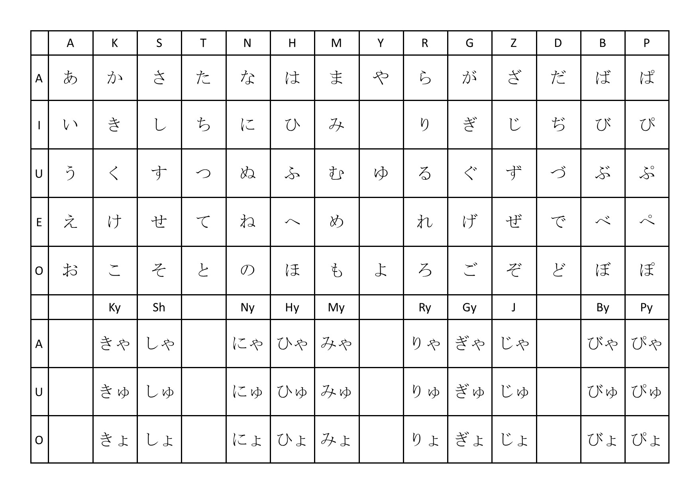
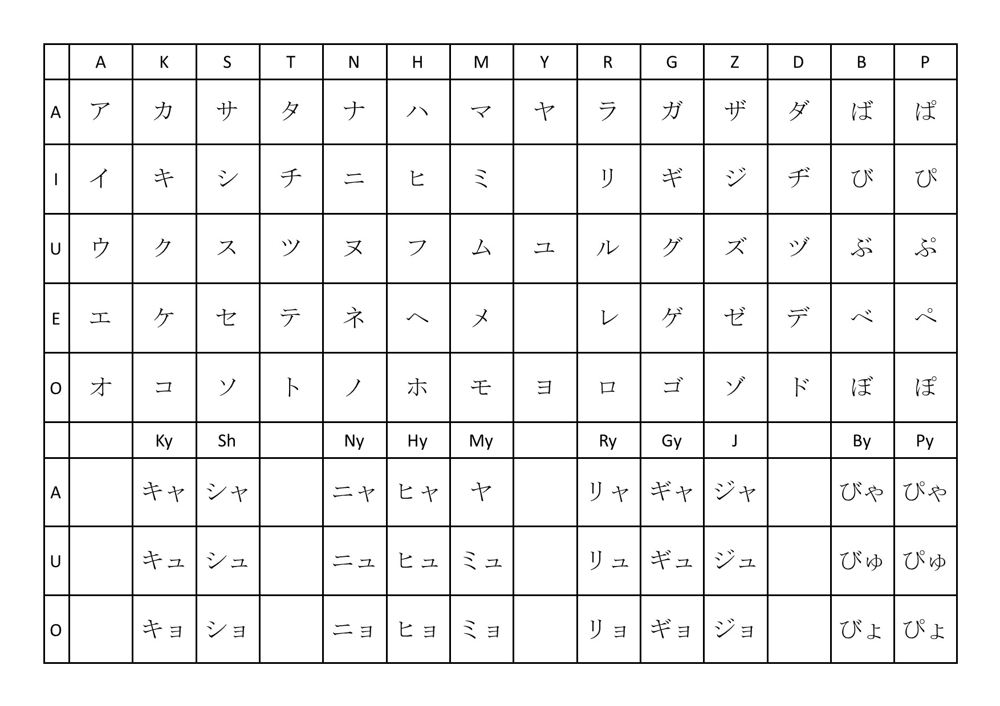

The Writing System
The Language comprises of three different scripts, Hiragana Katakana and Kanji. The first two are phonic stripts which convey sounds. The latter is taken from Chinese and are characters that convey meaning. Learning the writing systems is not neccessary to become a capable speaker. However, doing so is rewarding, will the learning experience easier, and will prove invaluable if you decide to visit Japan.
Hiragana
Hiragana is a phonic script used for words derived from Japanese itself.

Katakana
Katakana is the phonic alphabet used for words derived from foreign languages, meaning if you see it used you know the word is of foreign origin.

Kanji
These are taken directly from Chinese and carry meanings in picture form. They can substitute Hiragana to make a sentence much easier to read or simple parse for information.
月火水木金土日
Grammar
Though the Japanese language is quite alien to any language in Europe, it has another of other benenfits that can make the learning journey less arduous than one might expect.
Amounst other things, it is:
- extremely consistent with itself - there are very few exceptions to grammatical rules. Learn then and apply them and your sentence will work.
- contains many cognates - Japan faced a revolution in 1868, where it opened up the world and found itself needing extensive new vocabulary. These words it took from European languages, particularly English. It took the foreign words and fitted them to the sounds of the Japanese language. This means there is an extensive amount of Japanese vocabulary you can guess if you litten or read with care.
- pronounced how it is written - with very few expections, Japanese is very consistent with its link between pronunisation and spelling. This means that if you can read a word, you immediately know how to pronounce it.
- a langage who's sounds are all in the English language - Though there are some slight pronunisation differences, the sounds of the Japanese alphabet all exist within English, making it a very easy language to pronunce.
- Example Sentences